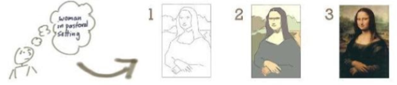

Es el proceso que se sigue para construir, entregar y hacer evolucionar el software, existen 3 etapas:
1. Planificación 2. Implementación y testeo 3. Lanzamiento y manutención
Los ciclos de vida más conocidos son los siguientes:
Cascada
Espiral
RAD(Desarrollo Rápido de Aplicación)
Orientado a objetos
Contiene los siguiente modelos, cada uno se adapta a un modelo de trabajo diferente:
-> Cascada
Es el más basico de todos, realizando una secuencia sin saltarse ningúna fase.
-> Iterativo
 Entrega un sistema completo desde el principio y se va agregando funcionalidades con cada versión, cada iteración es un ciclo de vida en cascada, pero a menor escala.-> Prototipado
Es efectivo cuando no se conocen los requerimientos y existe poca información con respecto a alas caracteristas que debe tener el sistema, entonces se crea un prototipo para reconocer si el sistema va en base a los requerimientos que pide el cliente.
-> Componentes
Es evolutivo por naturaleza, configura unidades, y cada una de estas es idenpendiente y funciona por si sola.
-> Ágiles
Optimizar el proceso de creación del mismo, el cual era caracterizado por ser rígido y con mucha documentación. Ej: SCRUM, XP, Crystal Clear, Kanban, Splint (Metodología De Google)
-> Espiral
No llevar un análisis de riesgo iterativo, por ende minimiza los riesgos, especialmente adecuado para sistemas complejos a gran escala.
-> Reutilización
Software de nivel superior, creados en desarrollos anteriores aplicados a nuevos proyectos, para disminuir tiempo y costos.
-> Orientado a objetos
Cada uno de ellos introduce un proceso para el análisis y diseño de un producto o sistema, un conjunto de modelos que evoluciona fuera del proceso y una notación que posibilita al ingeniero del software crear cada modelo de una manera consistente.
-> Métodos formales
Explota el poder de la notación y de las pruebas matemáticas.